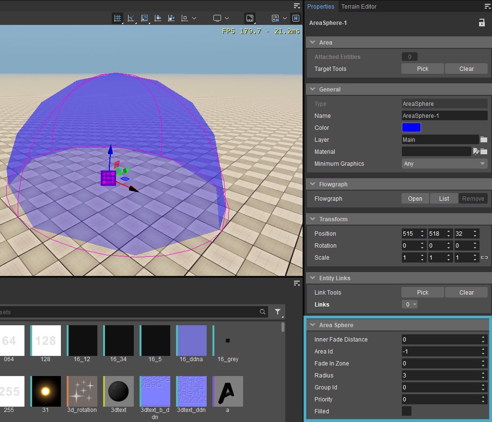

Overview
Triggers and other entities that should be enabled when the player enters or leaves a specific area can be linked to Area Sphere.

Parameters | Descriptions |
|---|---|
Inner Fade Distance | This value, specified in meters, determines how far an ambiance sound can blend into the shape with higher priority. |
Area Id | Sets up the ID of the area so that areas with another ID can overlap. |
Fade In Zone | Specifies in meters how big the zone around the box is that is used to fade in the effect attached to the box. Only when the player is inside the box the effect is rendered at 100%, at the beginning of the Fade In Zone it's rendered at 0%. |
Radius | Specifies how big the sphere should be. |
Group Id | Sets up the Group ID of the area, so areas with another group ID can overlap. |
Priority | Defines the Priority so areas with a higher priority will be processed first. |
Filled | Just for visibility in the editor this option defines if the area should be rendered as filled or not. |
When editing a shape or area, it is possible to snap a vertex to terrain or physicalized objects using Ctrl + Shift + LMB.
This is true for all Area objects, except Occluders.